618 ORIGINAL
黄金比（1:1.618）のように美しいシルエット
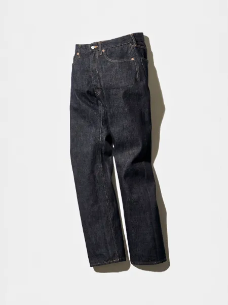
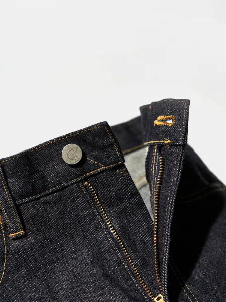
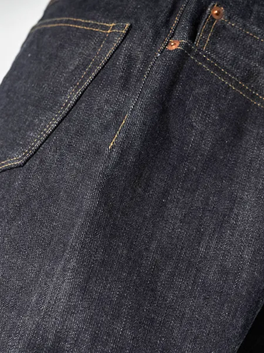
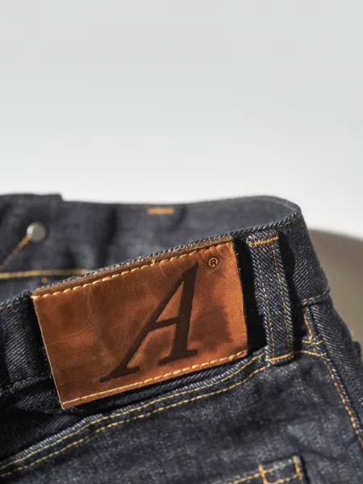
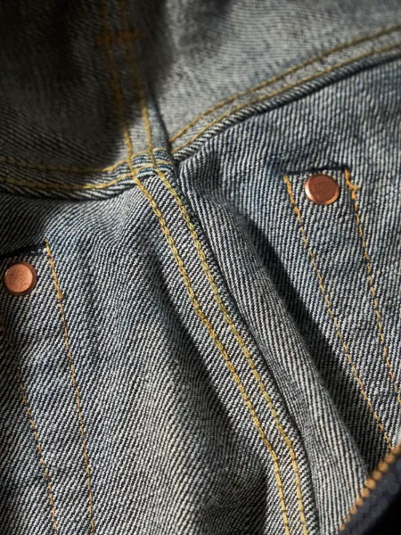
ピエール・フルニエと寺本欣児を繋ぐきっかけとなった、ANATOMICAを代表するアイテム。美しさの指標と言われる1:1.618の黄金比を目指し、完成に至るまで7回のサンプル修正を繰り返し、15ヶ月以上の月日を費やして完成したANATOMICAの最高傑作です。
公式オンラインストアで見る
CHINO Ⅱ
スラックスのような上品さが漂うワークパンツ
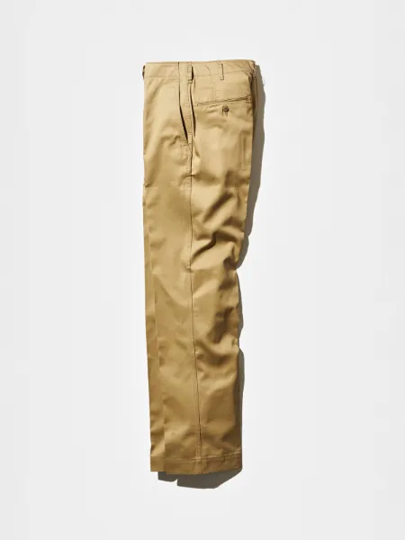
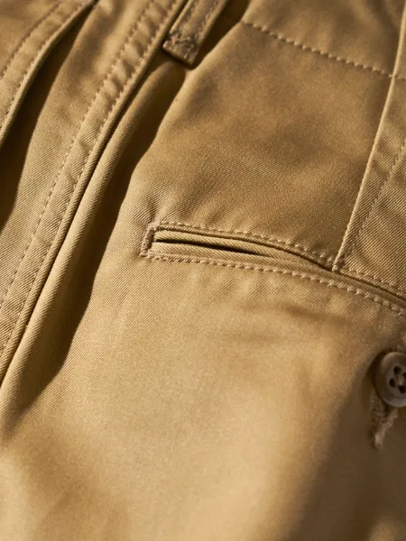
1960年代の細身なシルエットと、1940年代のゆったりとしたチノパンツのディテールを掛け合わせた唯一無二のモデル。
公式オンラインストアで見る
ATLANTE
古代大陸アトランティスに由来するリング
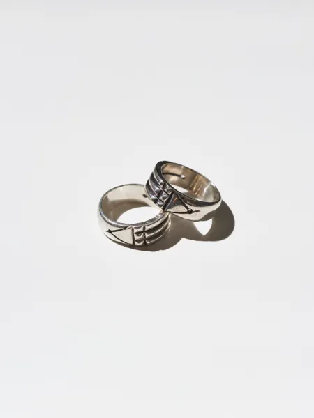
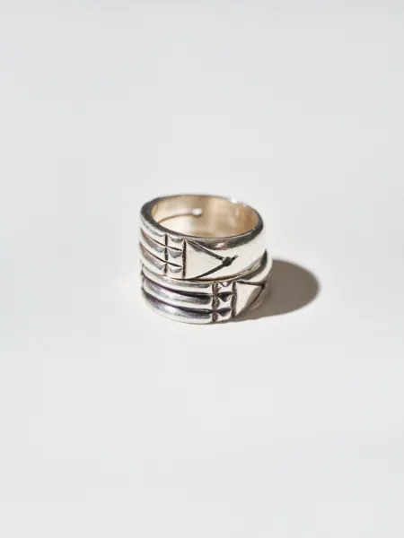
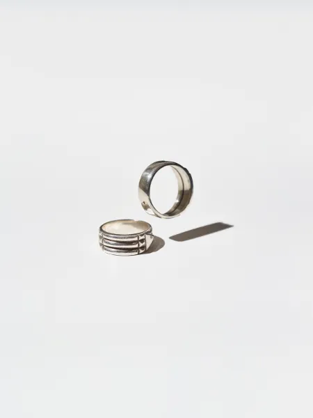
1860年にフランス人考古学者がエジプト王家の谷から発掘したと言われるアトランタリング。ピラミッドのようにも見える、三角形・長方形から成る幾何学模様は、エネルギーを放ち、人体構造学にも深く関係があるとピエールは語ります。この独特な模様を元に、エネルギーが循環するようにデザインされ、フランスで製作されたリングがANATOMICAのアトランタリングです。
公式オンラインストアで見る
BIG A SHIRTS
エレガントに着こなせるワークウェアー
ANATOMICAデザイナーのピエールが所有している60年代のヴィンテージワークシャツより着想を得た“BIG A”シリーズ。大きな襟、台襟のサイズステンシル、猫目のミルキーボタン、ステッチ幅や前プラケットの幅等、細部の細部まで拘り抜いたアイテムです。オールシーズン使える、経年変化も楽しめる生地を使用し、洗濯を繰り返すことで育っていき、着用者それぞれの1枚へとなっていきます。
公式オンラインストアで見る
618 MARILYN Ⅰ
DUDE RANCH時代から続く不朽の名作
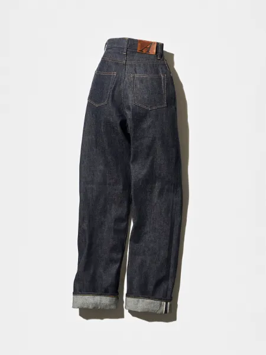
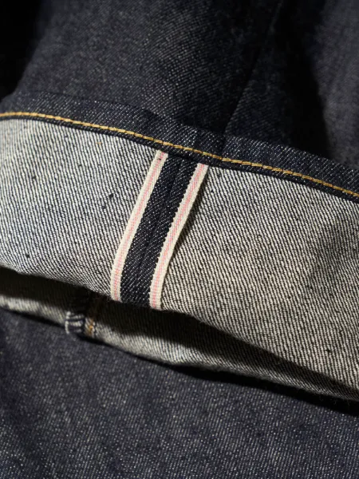
その名の通り、女優のマリリン・モンロー氏が愛したアメリカの名盤パンツがデザインモチーフとなっており、非常に深い股上が特徴です。ウエストの最もくびれている部分にトップがフィットし、お尻全体をデニムが優しく包み込み、女性らしいヒップラインを描きます。ヒップから裾にかけてはゆったりとしたバギーシルエット。お直しをせずに2、3回ロールアップすることで足元に重みが出てウエストの細さがより強調され、女性らしいラインが生まれます。トップスをタックインして穿くのがこのパンツの良さを最大限に活かせるスタイルです。
公式オンラインストアで見る
SINGLE
動きに合わせて美しくはためくコート
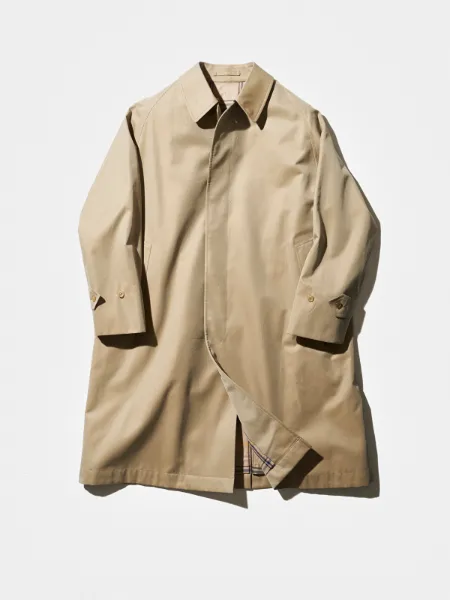
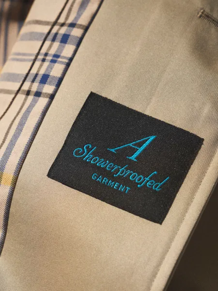
クラシックなシルエットでありながら、スタイリッシュな要素を兼ね備えた定番アイテム。特徴のひとつは、その名の通り、袖付けにあります。通常2枚の生地を肩の中心で縫い合わせているのに対し、1枚の生地を筒状にしてラグランスリーブを作っているため、首の付け根から袖口にかけて負担がなく、綺麗になだらかに落ちるシルエットが生まれます。現代では採用することが少なくなっている高度な技術を要するディテールです。ボリュームのあるシルエットも特徴。裾に向かって広がるAラインのシルエットは、どの角度からも美しく見えるように設計されており、動く度にはためき、エレガントな雰囲気を演出します。
公式オンラインストアで見る
DOLMAN
上品さと無骨さの絶妙なバランスを保つジャケット
「ドルマン」とはナポレオン3世期のフランス軍兵士の呼称で、彼らが作業時に着用していたワークジャケットがデザインリソースとなったクラシカルなジャケットです。作業着ならではのたっぷりとした身幅と袖幅で、太くカーブしたアームは人体構造に基づいたパターンメーキング。動きやすさが考慮されたストレスフリーな着心地。前下がりのついたデザインとなっており、ボトムスとの相性が良いのも魅力のひとつです。
公式オンラインストアで見る